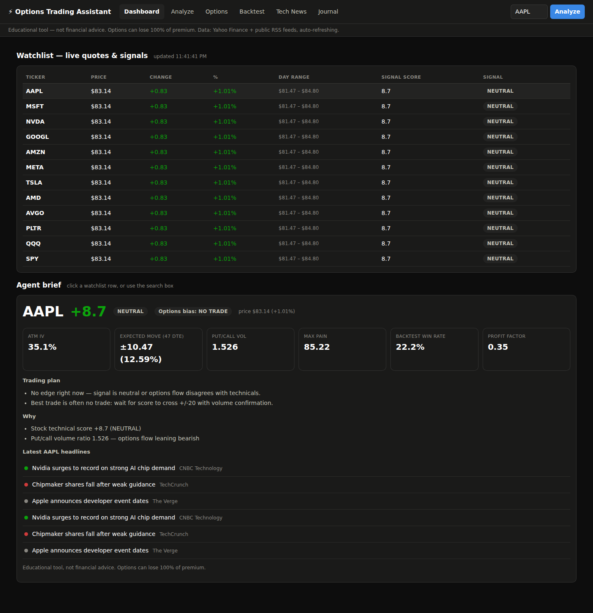
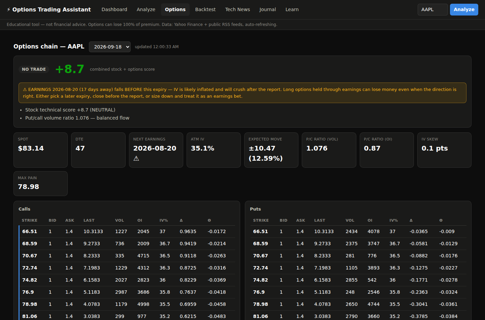
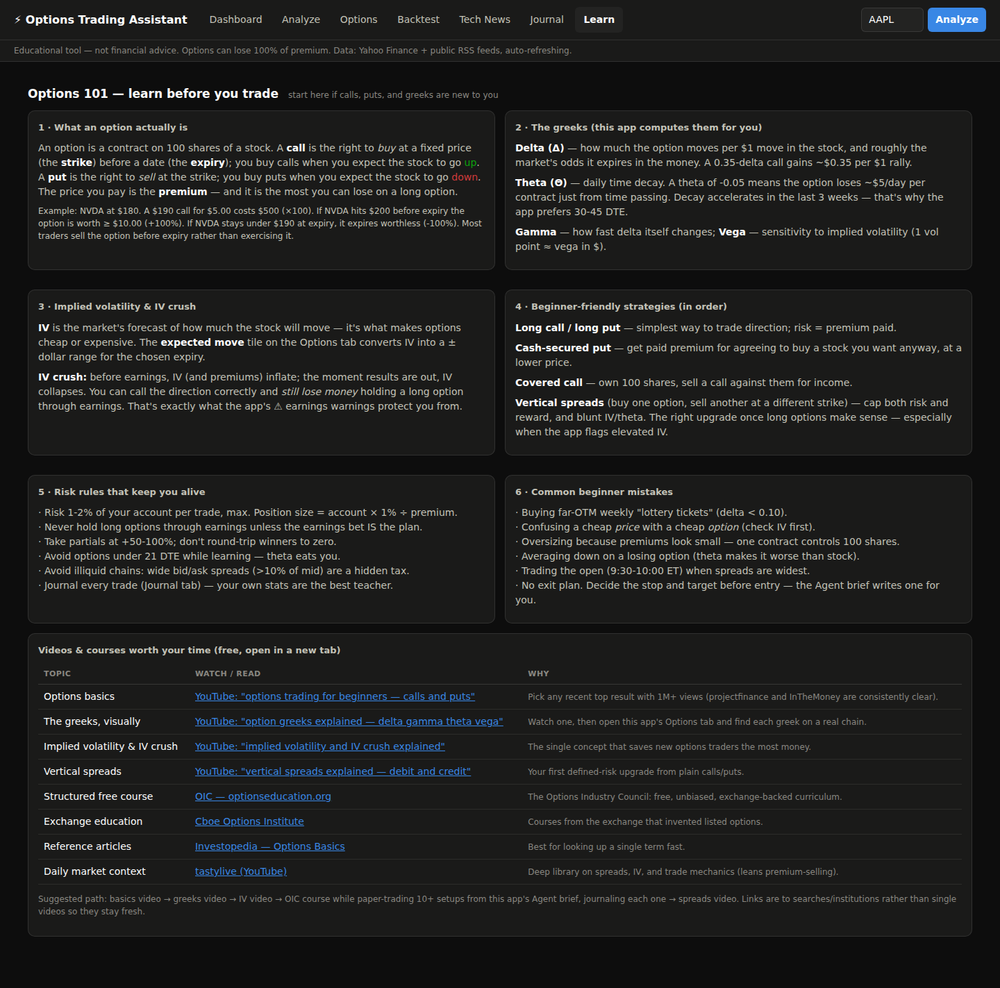

A free, open-source trading co-pilot you run on your own computer: live quotes and buy/sell signals, options chain analytics with call/put reads, backtesting, tech news, and a private per-user trade journal.
Free forever · No sign-up · No API keys · Your data stays on your machine
A watchlist of big tech + SPY/QQQ with a weighted 7-indicator score (trend, MACD, RSI, stochastic, Bollinger, momentum, volume) that refreshes every 30 seconds — and explains every vote.
Full chains with computed greeks, put/call ratios, implied volatility, expected move, max pain, unusual-activity scanner, and a clear CALL / PUT / NO TRADE recommendation.
The app tracks earnings dates and warns you before IV crush can hurt you — the mistake that costs new options traders the most money.
Test the exact signal you trade against years of history: win rate, profit factor, expectancy, drawdown, equity curve, and a full trade log.
Headlines merged from 12 sources (CNBC, TechCrunch, MarketWatch, Yahoo Finance and more), deduped and sentiment-tagged, refreshing every 3 minutes.
Everyone creates their own account. Trades, P&L, win rate, and equity curve are computed automatically and visible only to you.



start.bat (Windows) or start.command (Mac).
Dependencies install automatically and your browser opens at
http://127.0.0.1:8000. New to options? Start on the Learn tab.